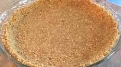

My Recipe for Cream Cheese Pie
(basically a pie version of a cheese cake)
Instrutions:
- Take out the cream cheese and soften it while it it still in the packaging. Once the cream cheese has been softedend up, place it into the blender
- Open the can of Eagle Brand Milk and pour it into the blender. I usually add one can, but you can adjust based on the sweatness level you want.
- Next, add 1 tbsp of lemon juice (preferable one half of a fresh lemon, but bottled juice will work just fine).
- Now that the ingredeients have been added to the blender, turn on the blender until the contents are similar to pudding and taste. If you are using a mixing bowl and beaters thats fine, the pie will set faster so keep that in mind.
- Once the contents have been blended to a consistance of pudding, taste the content to make sure everything taste good and add anything else. This is also when you would add more lemon juice if needed, but be careful because too much will make it taste like a key lime pie.
- Take out the graham cracker crust and begin to pour the contents into the crust. Once all of the contents have been transfered, place the pie into the fridge for approximately 4 hours to set. if you place the pie into the freezer it will set faster, but be carefull not to let the pie freeze. Additionally, if you use a air beater or mixer, the pie will set faster aswell due to the air being mixed in.
- Once 4 hours have passed, you can check to see if the pie is ready by using a knife in the middle of a pie (similar to how you check brownies). If the pie is clean then the pie is ready. There is no harm in eating the pie before it has fully set, but there is a chance of the pie loosing its integrity after being cut.
